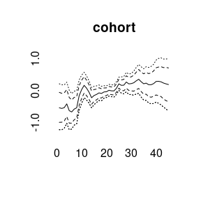
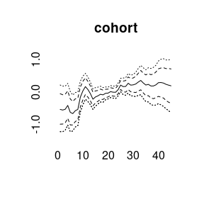
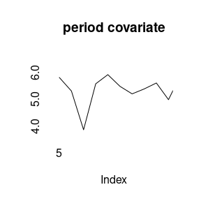
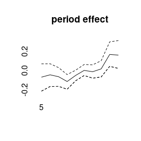
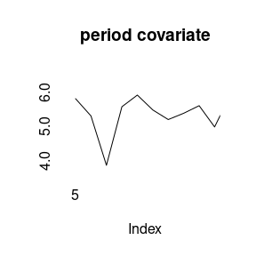
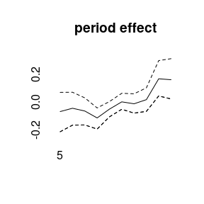

Bayesian Age-Period-Cohort Modeling
Volker Schmid
2018-12-04
modeling.RmdData example
BAMP includes a data example.
data(apc)
plot(cases[,1],type="l",ylim=range(cases), ylab="cases", xlab="year", main="cases per age group")
for (i in 2:8)lines(cases[,i], col=i)
APC model with random walk first order prior
bamp() automatically performs a check for MCMC convergence using Gelman and Rubin’s convergence diagnostic. We can manually check the convergence again:
## [1] TRUENow we have a look at the model results. This includes estimates of smoothing parameters and deviance and DIC:
##
## Model:
## age (rw1) - period (rw1) - cohort (rw1) model
## Deviance: 231.09
## pD: 36.83
## DIC: 267.92
##
##
## Hyper parameters: 5% 50% 95%
## age 0.397 1.041 2.217
## period 64.380 185.844 574.257
## cohort 34.914 59.723 98.518We can plot the main APC effects using point-wise quantiles:


More quantiles are possible:

 

## [1] TRUE##
## Model:
## age (rw2) - period (rw2) - cohort (rw2) model
## Deviance: 246.09
## pD: 33.63
## DIC: 279.72
##
##
## Hyper parameters: 5% 50% 95%
## age 2.038 6.307 16.379
## period 57.859 321.904 2737.458
## cohort 37.332 73.992 143.918


model3<-bamp(cases, population, age="rw1", period=" ", cohort="rw2",
periods_per_agegroup = 5)
checkConvergence(model3)## [1] TRUE##
## Model:
## age (rw1) cohort (rw2) model
## Deviance: 276.58
## pD: 30.18
## DIC: 306.76
##
##
## Hyper parameters: 5% 50% 95%
## age 0.307 0.785 1.642
## cohort 37.622 74.028 137.917

(model4<-bamp(cases, population, age="rw1", period="rw1", cohort="rw1",
cohort_covariate = cov_c, periods_per_agegroup = 5))##
## Model:
## age (rw1) - period (rw1) - cohort (rw1) model
## Deviance: 231.44
## pD: 36.82
## DIC: 268.26
##
##
## Hyper parameters: 5% 50% 95%
## age 0.396 1.047 2.202
## period 69.337 200.615 607.407
## cohort 35.054 59.819 99.935


(model5<-bamp(cases, population, age="rw1", period="rw1", cohort="rw1",
period_covariate = cov_p, periods_per_agegroup = 5))##
## Model:
## age (rw1) - period (rw1) - cohort (rw1) model
## Deviance: 231.16
## pD: 36.84
## DIC: 268.00
##
##
## Hyper parameters: 5% 50% 95%
## age 0.406 1.046 2.222
## period 67.462 198.116 625.158
## cohort 33.927 58.905 97.245

 
